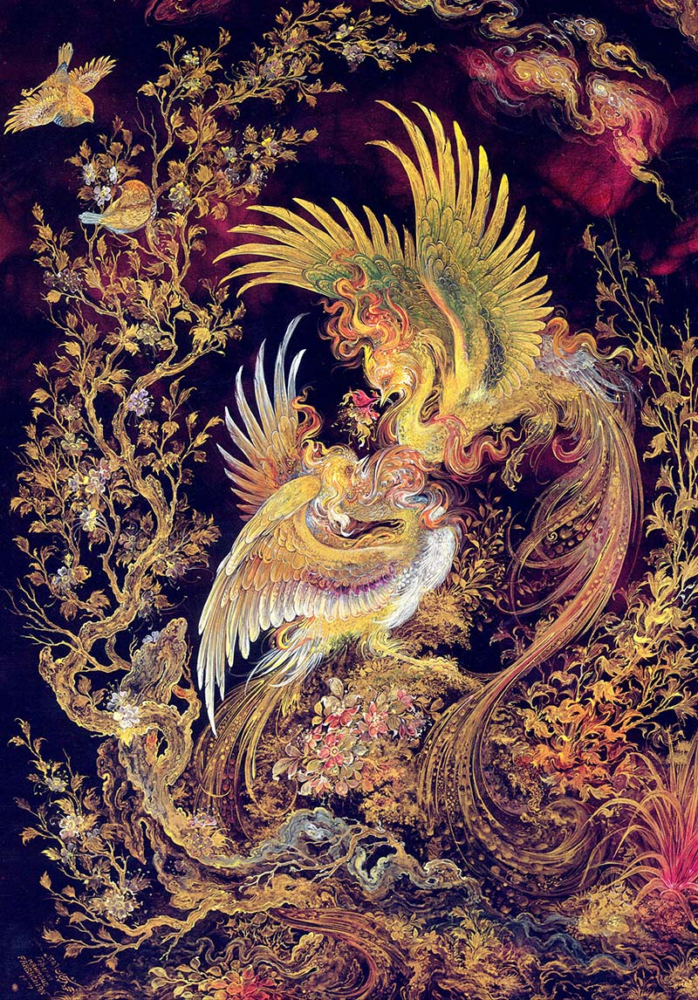
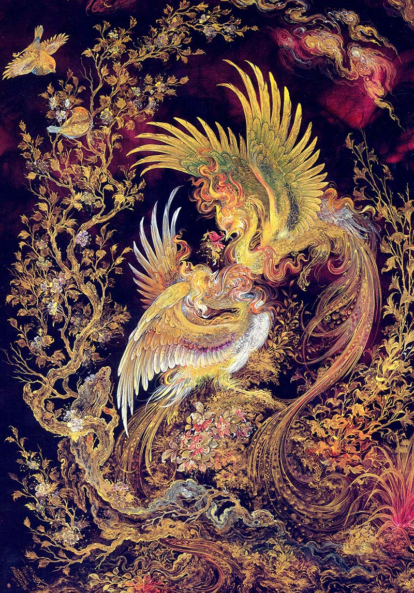
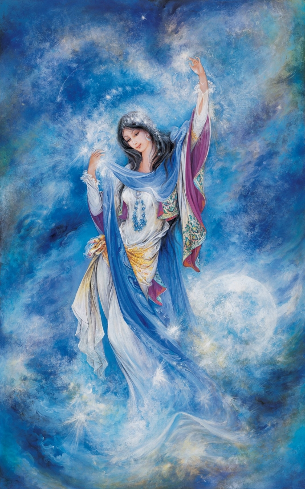
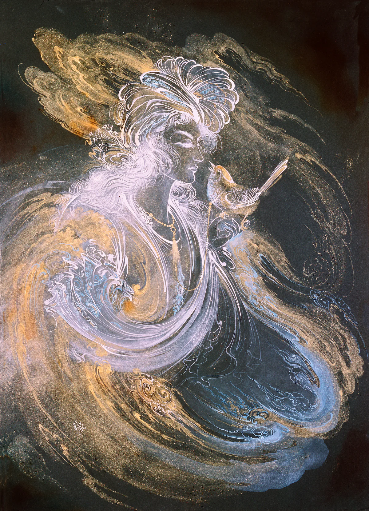
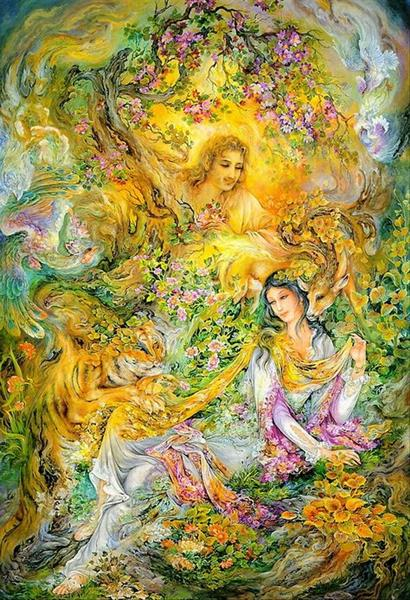
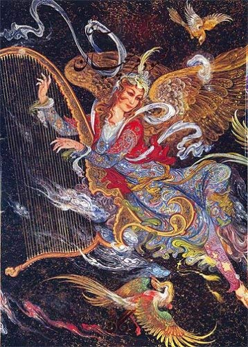
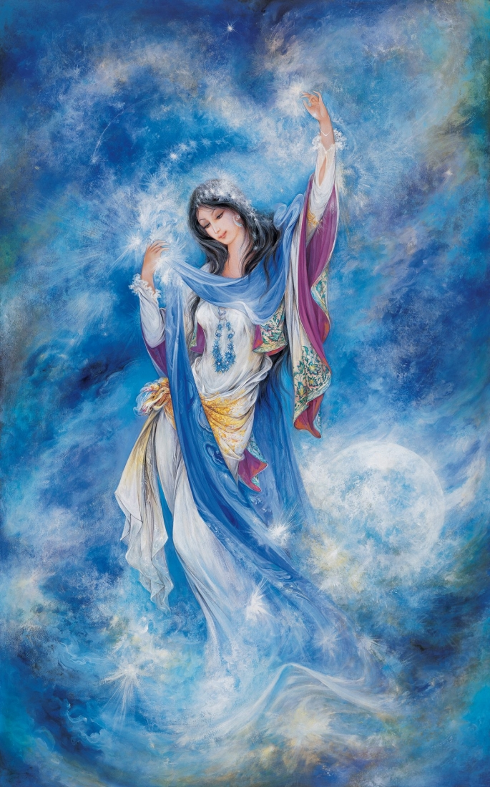
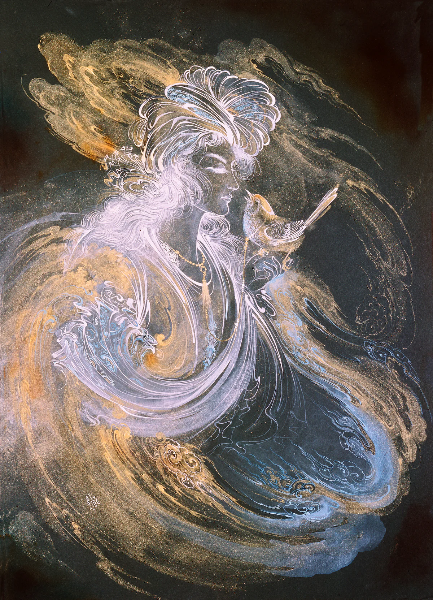
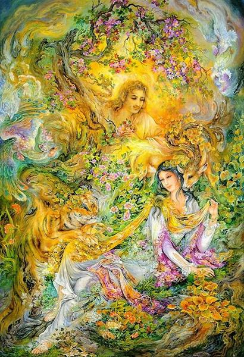
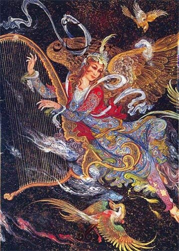

Why Farshghian?
Why is Farshghian my favorite painter?
Mahmoud Farshchian was an Iranian painter and educator. He was a master of Persian miniature painting.
Mahmoud Farshchian was born on 24 January 1930, in the city of Isfahan, Persia.
Farshchian's childhood home had an area called the Chicken House, where he played with birds like sparrows, hens, and roosters.
Birds are an element Farshchian often uses in his pieces, relating to his childhood memories
After receiving his diploma from Isfahan's High School for the Fine Arts, Farshchian left for Europe,
where he studied the works of the great western masters of painting.
He had a doctorate (grade 1 in arts) in Iranian painting and Islamic arts from the High Council of Culture and Art.
His Paintings
locations which has his paintings
Sadabad Palace: A Historical Cultural Complex in Tehran
Located in the northernmost part of Tehran, the Sadabad Complex is a sprawling royal estate that encapsulates the essence of Iranian regality and cultural richness
Location: Tehran, Iran
Farshchian cultural and art complex
Isfahan international cultural center (Farshchian Art and Cultural Complex) was designed and built between years 1989 and 2005.
Location: Isfahan, Iran
Astan Quds RazaviMuseums
The Astan Quds Razavi Museum in Mashhad, which was founded in 1937, is a public museum in Iran
Location: Mashhad, Iran
Videos
Some videos from Farshchain:
Photogallery
Some of Farshchain's paintings:


 

 






